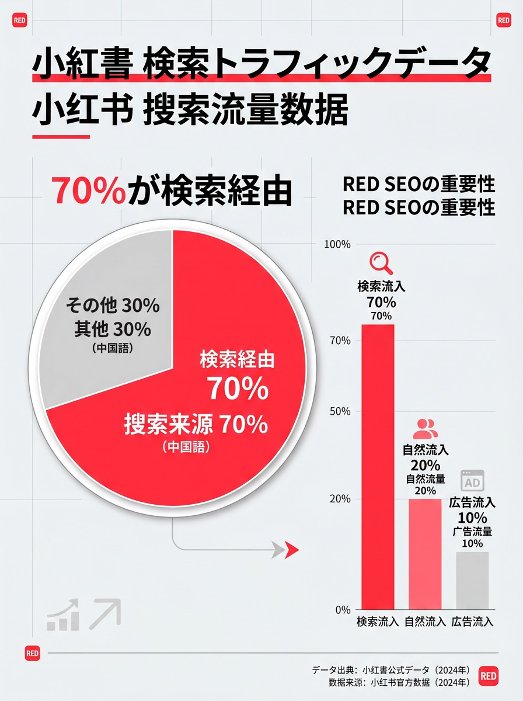

「うちの地域に中国人観光客を呼びたい。でも、ゴールデンルート（東京・大阪・京都）の知名度には太刀打ちできない…」そんな悩みを抱える地方の観光地・自治体・旅館・体験施設は少なくありません。
しかし今、小紅書（RED）が地方観光の救世主になっています。「穴場スポット」「知る人ぞ知る名所」を求めるリピーター中国人旅行者が急増するなか、小紅書での情報発信が地方への誘客に直結する事例が続出しています。本記事では、地方観光地が小紅書を活用して中国人インバウンド客を集客するための戦略を徹底解説します。
なぜ今、地方観光に小紅書が有効なのか
中国人旅行者の行動が「ゴールデンルート」から変化している背景には、次の要因があります。
- リピーター化：訪日経験のある中国人旅行者が増え、「まだ行ったことのない場所」「SNSでバズっているローカルスポット」への関心が高まっている
- 個人旅行（FIT）化：団体ツアーから個人旅行へのシフトが進み、自分で情報収集して旅程を組む旅行者が増加
- 「秘境感」へのニーズ：小紅書では「鲜为人知的日本景点（知る人ぞ知る日本の名所）」「日本隐藏宝藏（日本の隠れた宝）」といった投稿が高エンゲージメントを記録
- 円安効果の継続：地方の温泉旅館・体験施設のコストパフォーマンスが中国人旅行者にとって非常に魅力的
小紅書は「口コミで広がる発見型メディア」です。東京・大阪より競合が少ない地方スポットの方が、むしろコンテンツが埋もれにくくバイラル（拡散）しやすい環境にあります。
小紅書で地方観光コンテンツを作る5つのコツ
① 「秘境感」「非日常感」を前面に出す
中国人旅行者が地方に求めているのは、都市では体験できない「日本の原風景」「職人の世界」「大自然」です。投稿タイトルやキャプションに「秘境（秘境）」「隐藏（隠れた）」「不为人知（知られていない）」といった言葉を盛り込むと検索されやすくなります。
② 季節コンテンツを年4回必ず投稿する
桜・新緑・紅葉・雪景色——日本の四季は中国人旅行者を強く惹きつけます。シーズン2〜3ヶ月前に投稿を始めることで、旅行計画段階のユーザーに届けられます。
投稿タイミングの目安
🌸 桜（3〜4月）→ 1〜2月に投稿開始
🍁 紅葉（10〜11月）→ 8〜9月に投稿開始
❄️ 雪・温泉（12〜2月）→ 10〜11月に投稿開始
🌿 新緑・初夏（5〜6月）→ 3〜4月に投稿開始
③ 「行き方」を丁寧に説明する
地方の観光地を発見した中国人旅行者が最も困るのは「どうやって行くか」です。最寄り駅・アクセス方法・所要時間・乗り継ぎ方法を中国語で丁寧に説明する投稿は、保存率・エンゲージメントが格段に高くなります。
④ 「体験」を動画で見せる
温泉・藍染め体験・陶芸・農業体験・漁師体験など、地方ならではの体験コンテンツは動画（ショートビデオ）との相性が抜群です。15〜30秒の没入感のある動画が小紅書内でのバイラルを生みやすいです。
⑤ 地元の「人」にフォーカスする
職人・農家・旅館の女将・地元料理人など、地域に根ざした「人」のストーリーは、都市型コンテンツにはない感情的訴求力があります。インタビュー形式・密着形式のコンテンツは保存率が高く、フォロワー獲得につながります。

地方観光向けの小紅書キーワード戦略
小紅書では、ユーザーが検索するキーワードに投稿が最適化されているかどうかが表示回数を左右します。以下は地方観光コンテンツで効果的なキーワード例です。
| カテゴリ | 中国語キーワード | 日本語訳 |
|---|---|---|
| 穴場・秘境 | 日本隐藏景点 / 小众旅游地 | 日本穴場スポット / マイナー観光地 |
| 自然・景観 | 日本绝景 / 日本自然风光 | 日本絶景 / 日本自然の風景 |
| 温泉・旅館 | 日本温泉旅馆 / 秘汤 | 日本温泉旅館 / 秘湯 |
| 地方エリア | 北海道旅游 / 九州旅行 / 东北日本 | 北海道旅行 / 九州旅行 / 東北日本 |
| 体験 | 日本传统体验 / 日本工匠 | 日本伝統体験 / 日本職人 |
| 食 | 日本地方美食 / 当地特色料理 | 日本地方グルメ / 郷土料理 |
地方観光×小紅書KOL活用の実践法
地方への誘客で最も即効性が高いのが、旅行系KOL（インフルエンサー）の招待モニタリングです。以下のステップで進めます。
- ターゲットKOLの選定：小紅書で「日本旅行」「穴場スポット」を発信しているKOL/KOCを3〜10名リストアップ。フォロワー数よりコメント数・保存率・地域への関心度を重視します。
- 招待・交渉：無償招待（交通・宿泊・体験を提供）か、有償依頼かを決めます。地方の旅館・温泉施設は「現物提供」で契約するケースも多いです。
- コンテンツの自由度を確保：台本通りではなく、KOLの自然なリアクション・体験談を投稿してもらう方が信頼度が上がります。
- ハッシュタグ・地名のタグ付け依頼：投稿時に必ず地域名・観光地名の中国語キーワードをキャプションに入れてもらいます。
成功事例：小紅書で地方に中国人観光客が殺到したケース
東北の秘湯旅館が小紅書で一躍「聖地」に
訪日旅行系KOC（フォロワー約3万人）が旅館に宿泊し、囲炉裏料理・雪の露天風呂・女将との交流を投稿。投稿がバイラルし、中国語圏からの直接予約が前年比3倍に。予約の問い合わせ先として設置したWeChat公式アカウントのフォロワーが1,200名増加。
北海道の農場が「絶景×体験」で小紅書トレンド入り
ラベンダー収穫体験をショートビデオで発信。「北海道花田秘境」のキャプションが中国人旅行者のツボを押さえ、1週間で保存数5,000件超。体験予約はシーズン前に完売となり、翌年の予約問い合わせも急増。
四国の観光協会が小紅書公式アカウントを開設
地元の伝統工芸・祭り・自然をテーマに月8〜12投稿を継続。開設6ヶ月でフォロワー8,000名を獲得し、タグ付けされた旅行者の投稿が二次拡散。訪問した中国人旅行者のUGC（ユーザー生成コンテンツ）が自動的に増加する好循環が生まれた。
予算別：地方観光施設の小紅書活用プラン
- 月5万円以下（最小構成）：中国語翻訳対応した投稿を月4〜6本、自社で作成。季節写真＋アクセス情報の定型フォーマットで継続。
- 月10〜20万円（スタンダード）：月8〜12投稿＋KOC招待を年2〜4回。写真・動画の品質にこだわり、フォロワー1,000〜3,000人を目指す。
- 月30〜50万円（集中投資）：運用代行＋KOL招待（中規模）＋小紅書広告（发现页広告）。3〜6ヶ月で数万フォロワーと観光客の目立った増加を目指す。
まとめ：地方こそ小紅書の「ブルーオーシャン」
東京・大阪・京都では、すでに多くの競合企業が小紅書で情報発信しています。しかし地方観光地では、まだ本格的に取り組んでいる施設が少なく、早期参入で圧倒的な優位性を築けるブルーオーシャンです。インバウンド集客全体の費用相場については、インバウンド集客の費用・料金相場の記事で比較・解説しています。
「中国語が話せるスタッフがいない」「コンテンツの作り方がわからない」という場合でも、PROTECHが中国語ライティング・コンテンツ制作・KOL招待・アカウント運用まで一貫してサポートします。地方の観光施設・自治体・DMOの方もお気軽にご相談ください。